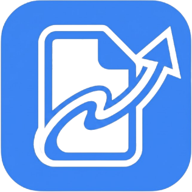

LajuPDFSolusi cerdas untuk mengonversi gambar dan dokumen Office Anda menjadi PDF berkualitas tinggi dalam hitungan detik. 100% Gratis dan Aman.
Unggah file Anda di bawah ini dengan aman.
Mendukung pemrosesan instan
Halaman mana yang ingin diambil?
Biarkan kosong jika ingin mengekstrak semua halaman menjadi file terpisah, atau ketik halamannya (Contoh: 1, 3, 5-7) untuk menyatukannya di satu PDF baru.